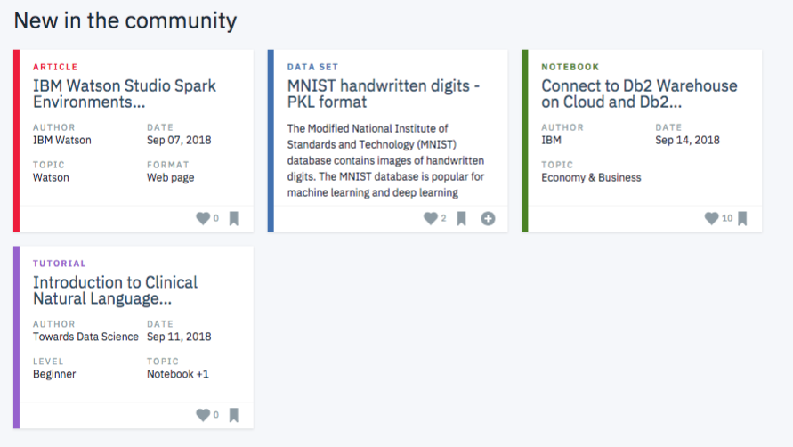

I was interested in building a regression model to predict selling price of cars in Kaggle's Car dataset and also find answers to questions like:
Which features of a car has the most impact on the price of the car?
Does the distance covered by the cars before sale affect the price of cars?
Which is most expensive, diesel or petrol cars?.

Data Exploration of Covid 19 Dataset in SQL server.

The aim of this project involves building a classification model that that categorizes real messages that were sent during disaster events. This was done by creating a machine learning pipeline so that the message can be sent to the appropriate relief agency.
This project was completed as part of the requirements for Udacity NanoDegree Certification.

For this project I analyzed the interactions that users have with articles on the IBM Watson Studio platform, and made recommendations to them about new articles they may like. This project was part of Udacity DSND program. Below we can see an example of what the dashboard could look like displaying articles on the IBM Watson Platform.

This project was about Cleaning data using SQL. The data is a housing dataset from Nashville.
This project involved analyzing Twitter data with ENDSARS hashtag between 20th and 30th October 2020.
This project is the capstone project of Udacity data scientist nanodegree program. The goal of this project is to analyze demographics data for customers of a mail-order sales company in Germany, comparing it against demographics information for the general population. Unsupervised learning techniques are used to perform customer segmentation, identifying the parts of the population that best describe the core customer base of the company.